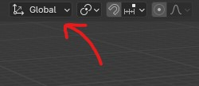
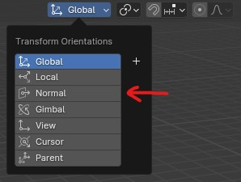

How to rotate or move a face by normal direction in Blender
Posted May 9th 2024
Sometimes when you're modelling in Blender you want to move a face or vertex a certain direction that follows the already existing mesh. The problem is is that your object is rotated a certain way so the global and local rotation are not right. To fix this we can use the normal transformation orientation. You can find and enable this in 3D viewport by going to the top of the viewport and clicking on 'Global' (This is the default transform orientation). Now you can choose 'Normal' to move or rotate along the normal axis.

↓

To use this while modelling, you can click on a face that would normally be off axis and rotate it. When you try to rotate it normally nothing will happen. Instead, you want to click on the axis you want to rotate it along. So either X, Y, or Z. For the normal transform orientation the "forward" vector is Z. Think of this like the default plane, the normal direction is up, so the Z-axis.
By default you are probably already using these transform orientations. When you want to move something along the X-axis when modelling normally you would press 'X' and it would move perfectly along the X-axis. When you press X twice it would move along a whole different axis. This is the local axis. In Blender you can toggle between local and whatever transform you have selected by pressing the axis twice.
You can also play around and use all the other transform orientations in the same way, this is really useful in a lot of cases so definitely keep it in mind!
Still have questions?
Email me at: baeacbusiness@gmail.com